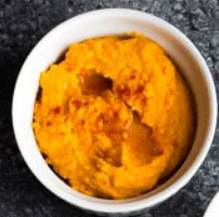
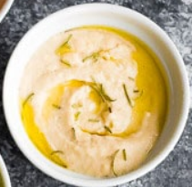
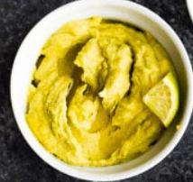
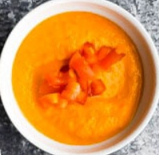
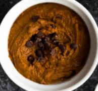
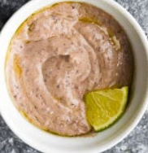
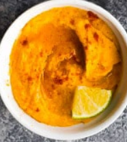

HomePage
Pumpkin

15 oz pumpkin puree
3 tablespoons tahini
2 tablespoons olive oil
1/2 lemon (juiced)
2 cloves garlic (minced)
3/4 teaspoon salt
1 1/2 teaspoon cumin
1 1/2 teaspoon ground coriander
15 oz can of chickpeas ( * reserve liquid)
liquid from can of chickpeas I used roughly 1/3 cup
Garlic White Bean

1 can of cannellini beans {or white kidney beans}
2 tbsp fresh lemon juice {1/2 a lemon approximately}
1/4 -1/2 tsp salt {taste and decide}
1/2 tsp ground coriander
1/2 tsp ground cumin
3 tbsp olive oil
2 tbsp tahini
1/2 tsp fresh rosemary chopped {to garnish}
Avocado

2 avocados ripe
3 cloves garlic minced
2 tablespoons tahini
1 lime juiced
1/2 teaspoon salt
1/2 teaspoon cumin
1/2 teaspoon ground coriander
19 oz can of chickpeas (drained, but reserve liquid)
Roasted Red Pepper

15 oz can of chickpeas (reserve liquid!)
2 tablespoons tahini
>2 tablespoons olive oil
1/2 lemon (juiced)
2 cloves garlic (minced)
1/2 teaspoon salt
1/2 teaspoon cumin
1/2 teaspoon ground coriander
285 mL jar of roasted red peppers (around 10 oz; drain well)
Chocolate

1/4 cup maple syrup
1/4 cup cocoa powder
1/4 cup natural peanut butter (or other nut butter)
1/3 cup almond milk or dairy milk (or more as needed)
2 teaspoons espresso powder
1/2 teaspoon cinnamon
1 teaspoon vanilla extract
1/4 cup mini chocolate chips
pinch salt
19 oz chickpeas drained and rinsed
Black Bean

15 oz can of black beans drained, but reserve liquid
1 clove garlic (minced)
2 tablespoons olive oil
2 tablespoons tahini
2 tablespoons lime juice
1/2 teaspoon cumin
1/2 teaspoon ground coriander
1/2 teaspoon salt
1/4 teaspoon cayenne more for heat
Smoky Sweet potato

3 1/2 cups / 300 g sweet potato peeled and cut into 1 inch cubes
15 oz can of chickpeas drained, but reserve liquid
1 lime (juiced)
1 clove garlic (minced)
2 tbsp tahini
3 tbsp olive oil
1 chipolte pepper
4 tsp adobo sauce (from a can of chipotle peppers)
1/2 tsp salt
1/2 tsp ground cumin
1/2 tsp ground coriander
1/2 tsp chili powder